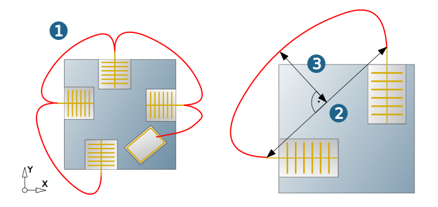

Parameters dialog page
Sorting strategy
The following sorting methods can be used:
No sorting: Linking job keeps the sequence in each reference job and between the different reference jobs.
Bottom to top - Frame: The linking job sorts the additive toolpaths from bottom to top based on their distance from the job frame.
Bottom to top - Surface: The linking job sorts the additive toolpaths from bottom to top based on their distance from the selected surface.
By layer: The linking job sorts the additive toolpaths based on the layer number and the job sequence within the linking job.
Rapids
Specify the mode for the fast travel movements (rapids) of linked individual jobs.
Skip first and last: Skip the first infeed movement and last retract movement of the individual sub-jobs.
Keep all rapids: Keep all infeed and retract movements of sub-jobs within the linking job.
Clearance mode
Planar/ Radial: Specify how the toolpaths of the linked sub-jobs are linked. (1) Planar, (2) Radial.
 |
Rapid smoothing
Available for the Clearance distance retract mode. Enable the High speed option to activate Rapid smoothing (1).
|  |
When machining in 5X mode, the linking movements are defined without abrupt changes of direction. The Smooth factor affects the shape of the smoothed movement as a ratio of the length of the connection line (2) to the required "height" of the movement (3). If the selected smooth factor potentially leads to a collision, the movement is automatically rendered collision free.
The Clearance distance retract mode must be active. The Linking movement with the Distance angle limit ( Setup dialog page) must match the rapid smoothing.
Rapid Z positions
Link height: Height of the plane for rapid movements in Z direction.
Start height / end height: Height of the plane for the start (start height) and the end of the machining (end height).